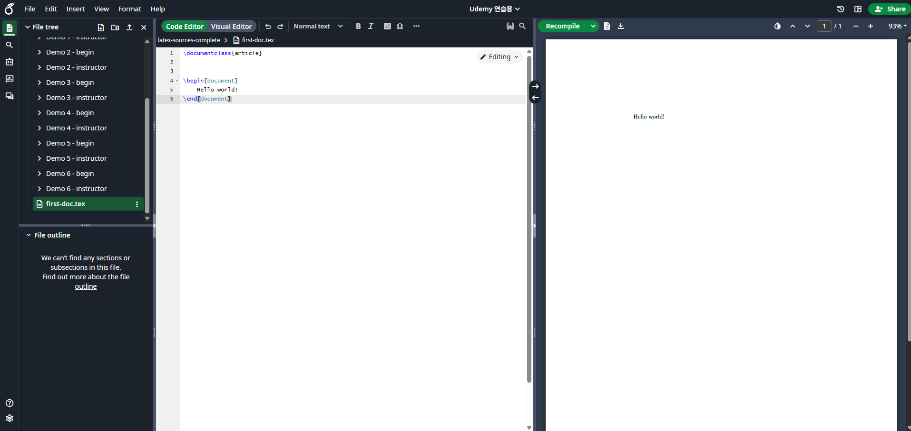

Overleaf / LaTeX Learning Guide
The most powerful document system for academic writing — from first steps to real papers. Not just syntax: this guide follows the actual flow of paper writing, comparing code with rendered output side by side.
01 Introduction to Overleaf
What LaTeX and Overleaf are — and why academia depends on them.
What is LaTeX?
LaTeX is a professional typesetting language built on top of Donald Knuth's TeX system. Unlike WYSIWYG editors such as Word, you describe your document's structure with a markup language and a compiler produces a polished PDF.
What is Overleaf?
Overleaf is a cloud-based collaborative LaTeX editor. No installation required — write, compile, and collaborate directly in your browser. overleaf.com
Working in Overleaf feels like coding: the source editor sits on the left and the compiled PDF on the right. Edit the source, press Recompile (or Ctrl + Enter), and the PDF updates.

Compilation Flow
02 documentclass
The first line — defines the document type and global options.
\documentclass[12pt,a4paper]{article}Common Classes
| Class | Purpose |
|---|---|
article | Papers, assignments, short reports |
report | Longer chapter-based documents (theses) |
book | Books |
beamer | Presentation slides |
letter | Letters |
IEEEtran | IEEE conferences (required) |
Common Options
| Option | Effect |
|---|---|
10pt / 11pt / 12pt | Base font size |
a4paper / letterpaper | Paper size |
twocolumn | Two-column layout |
fleqn | Flush-left equations |
onecolumn | One-column layout (default) |
03 Document Skeleton
Preamble vs. Document body — the bones of every LaTeX document.
% --- Preamble (configuration area) ---
\documentclass{article}
\usepackage{graphicx} % figure inclusion
\usepackage{amsmath} % math environments
\usepackage{hyperref} % hyperlinks / cross-references
% --- Document Body (actual content) ---
\begin{document}
% write your content here
\end{document}\begin{document} and \end{document}.
Try it: your first compile
The smallest document that compiles is a class plus a document body. Paste this into a new project and recompile:
\documentclass{article}
\begin{document}
Hello world!
\end{document}
To force a page break anywhere in the body, use \newpage.
Document Structure Visualization
04 Title & Authors
The paper header — Title, Author, Date.
\title{TDA for Medical Data}
\author{Sunjun Hwang \\
Yonsei University}
\date{May 2026}
\begin{document}
\maketitleTDA for Medical Data
Multiple Authors with Affiliations
\author{
Sunjun Hwang$^{1}$
\and
Co-Author$^{2}$ \\
$^{1}$Yonsei University \\
$^{2}$Permillion Inc.
}\maketitle, nothing will be printed even if you declared \title / \author.
Putting the header together
Declare the title block in the preamble, print it with \maketitle, then add the abstract and the first section (both covered next). \date{\today} prints today's date; an empty \date{} prints none.
\documentclass{article}
\title{My First Document}
\author{Sunjun Hwang}
\date{\today}
\begin{document}
\maketitle
\begin{abstract}
This is a short abstract of the document.
\end{abstract}
\section{Introduction}
Hello, world.
\end{document}
Want the title on a page of its own? Add the class option: \documentclass[titlepage]{article}.
05 Abstract
A single paragraph that summarizes the entire paper.
\begin{abstract}
We apply Topological Data Analysis (TDA)
to BRCA breast cancer datasets to discover
novel topological structures and biomarkers.
Our results show that persistence-based
features outperform conventional baselines
in subtype classification.
\end{abstract}Abstract
We apply Topological Data Analysis (TDA) to BRCA breast cancer datasets to discover novel topological structures and biomarkers. Our results show that persistence-based features outperform conventional baselines in subtype classification.
Unlike \section, the abstract is an environment, so it needs a \begin{abstract} … \end{abstract} pair. Place it right after \maketitle and compile:

The difference is clearer once the body has real text. With a dummy paragraph under the Introduction, the abstract stands apart from the body:

06 Section / Subsection
Document hierarchy — the foundation of automatic numbering and the table of contents.
\section{Introduction}
\subsection{Background}
\subsubsection{Prior Works}
\section{Method}
\subsection{Persistent Homology}1Introduction
1.1Background
1.1.1Prior Works
2Method
2.1Persistent Homology
Write \section{Introduction} followed by ordinary text — LaTeX numbers it for you:

\section{Introduction} compiled: the number “1” is added automatically.The class changes how sections look
The same source looks different under a different class. Switch article to book and recompile:
\documentclass{book}
\title{Sunjun's Paper}
\author{Sunjun Hwang}
\date{\today}
\begin{document}
\maketitle
\section{Introduction}
This is going to be a normal paragraph.
\end{document}
book, \maketitle produces a full title page.
book, sections live inside chapters, and none has been declared yet.Each class has its own conventions, so check the output whenever you switch — and for a paper, use the venue's template class.
Subsections and sub-subsections
Papers often need “1.1”-style headings. \subsection adds one level:
\subsection{Some Background}
Text of the subsection...
\subsection is numbered 1.1.One level deeper is \subsubsection:
\subsubsection{Drilled Down}
Text of the sub-subsection...
\subsubsection is numbered 1.1.1.* like \section*{Acknowledgments} to suppress both numbering and TOC inclusion.
07 Label & Reference
Automatic in-document cross-referencing — one of LaTeX's greatest strengths.
\section{Introduction}\label{sec:intro}
As shown in Section \ref{sec:method}, ...
See Figure \ref{fig:overview} and Equation \eqref{eq:main}.Label Prefix Convention
| Type | Prefix | Example |
|---|---|---|
| Section | sec: | sec:introduction |
| Figure | fig: | fig:overview |
| Table | tab: | tab:results |
| Equation | eq: | eq:loss |
| Algorithm | alg: | alg:training |
\ref{x} alone tells you nothing about what is being referenced. Prefixes drastically improve readability and maintainability.
\label must come after \caption to capture the right number. If \label is placed before \caption, the reference will resolve to the wrong number.
See it work
Give the sub-subsection from Section 6 a label, then refer to it from the text:
\subsubsection{Drilled Down}
\label{subsubsec:drilled-down}
...
As described in Section~\ref{subsubsec:drilled-down}, ...
\ref prints the current number (1.1.1). Move the section and the number updates itself.Labels never appear in the PDF — they are names for you and your co-authors. The same mechanism works for figures, tables, equations and algorithms.
Splitting a paper into sub-files
Long papers are easier to manage, and to write together, when each section lives in its own file.
Create a new file
In the file tree, choose New File and name it, for example intro.tex.

.tex file from the Overleaf file tree.Write the section inside it
The sub-file holds only content — no \documentclass and no \begin{document}.

Pull it into the main file
Where the section should appear in main.tex, write \input{intro} (the .tex extension is optional).
\begin{document}
\maketitle
\input{intro} % contents of intro.tex appear here
\input{method}
\end{document}
\input, the sub-file’s text is compiled into the main document.08 Figure
Inserting figures — built up one step at a time, the way you would actually do it.
Call \includegraphics — and watch it fail
\includegraphics{file} inserts an image file (path relative to the project). Try it in a plain document:
\documentclass{article}
\begin{document}
\section{More stuff}
Insert a figure in this section.
\includegraphics{overview.pdf}
\end{document}
Load graphicx in the preamble
Images need the graphicx package, loaded before \begin{document}:
\documentclass{article}
\usepackage{graphicx} % must come before \begin{document}
\begin{document}
...
graphicx loaded, the image appears.Wrap it in a figure environment
A bare image sits in the text like a giant letter and may not fit the page. Wrapping it in figure makes it a float: LaTeX moves it to a good position, and you can add a caption.
\begin{figure}
\includegraphics{overview.pdf}
\end{figure}
figure, the image becomes a block that LaTeX places for you.Center, size, caption, label — then refer to it
\begin{figure}[t]
\centering
\includegraphics[width=0.8\linewidth]{figures/overview.pdf}
\caption{Overview of our TDA pipeline.}
\label{fig:overview} % always after \caption
\end{figure}
As shown in Figure~\ref{fig:overview}, ...
\ref{fig:overview} prints the figure number automatically.Position Options
The optional argument after \begin{figure} tells LaTeX where it may place the float.
| Option | Meaning |
|---|---|
h | here — if possible, at this point in the text |
t | top of the page — the most stable choice for papers |
b | bottom of the page |
p | on a dedicated float page |
! | override LaTeX's internal constraints, e.g. [!t] |
H | exactly here (requires the float package) |
Options combine: [ht] for drafts, [tb] to allow top or bottom, [htbp] for maximum flexibility. For example, [b]:
\begin{figure}[b]
\includegraphics{overview.pdf}
\end{figure}![[b] sends the figure to the bottom of the page.](../assets/overleaf/image 14.png)
[b] sends the figure to the bottom of the page.Sizing the image
| Option | Effect |
|---|---|
width=\linewidth | Width of the current column (0.5\linewidth is half) |
width=\textwidth | Width of the whole text block |
height=5cm | Fixed height |
scale=0.7 | Scale by a factor |
keepaspectratio | Keep proportions when both width and height are set |
Two-Column-Spanning Figures (two-column layout)
In a two-column paper, an architecture diagram squeezed into one column is often unreadable. figure* spans both columns (it can only go at the top or on a float page):
\begin{figure*}[t] % figure* instead of figure
\centering
\includegraphics[width=\textwidth]{wide.pdf}
\caption{Two-column-spanning figure.}
\label{fig:wide}
\end{figure*}Caption style
With \usepackage{caption} you can tune captions globally: \captionsetup{font=small, labelfont=bf, skip=5pt} gives smaller text, a bold “Figure 1” and a 5pt gap between image and caption. Venue templates usually set this already — don't override them.
09 Table
The table (float) plus tabular (content) combination, one piece at a time.
Start with tabular
tabular holds the cells. Its argument declares the columns, one letter per column. Cells are separated by &, and rows end with \\.

tabular just sits in the text — it does not yet read as a table.Wrap it in table
\begin{table}
\begin{tabular}{...}
...
\end{tabular}
\end{table}
table, it becomes a float block, separated from the text.Center it
Add \centering as the first line inside table.

\centering moves the table to the middle of the page.Add a rule
\hline draws a horizontal line.

\hline right after the column spec puts a rule above the header.Fill in the cells
\begin{table}
\centering
\begin{tabular}{lccc} \hline
Head 1 & Head 2 & Head 3 & Head 4 \\
1 & 2 & 3 & 4 \\ \hline
\end{tabular}
\end{table}
lccc: the first column left-aligned, the other three centered.Vertical lines (optional)
Put | between column letters, e.g. {l|c|c|c}. Most paper templates avoid vertical rules, so use them sparingly.

l|c|c|c adds a vertical line between the columns.A paper-ready table
Like figures, tables take \caption and \label. In tables the caption conventionally goes above:
\begin{table}[t]
\centering
\caption{Comparison.}
\label{tab:result}
\begin{tabular}{lcc}
\hline
Method & Acc. & F1 \\
\hline
Baseline & 82.1 & 0.79 \\
Ours & 89.4 & 0.87 \\
\hline
\end{tabular}
\end{table}Table 1. Comparison.
| Method | Acc. | F1 |
|---|---|---|
| Baseline | 82.1 | 0.79 |
| Ours | 89.4 | 0.87 |
Column Specifiers
| Specifier | Effect |
|---|---|
l / c / r | Left / centered / right-aligned |
p{3cm} | Fixed width with automatic line breaks (top-aligned) |
m{3cm} / b{3cm} | Fixed width, vertically centered / bottom-aligned (needs array) |
*{3}{c} | Repeat: the same as ccc |
>{\centering\arraybackslash}p{3cm} | Fixed width with centered text (needs array) |
booktabs package and its \toprule, \midrule, \bottomrule rules instead of \hline. To build a table visually, try Tables Generator.
10 Equation
Mathematics — the area where LaTeX shines brightest.
Inline Math
Math inside a sentence goes between two dollar signs:
The variable is set to $x = 3$ before the loop.
$x = 3$ is typeset as math within the line of text.Display Math (numbered)
A standalone, numbered equation uses the equation environment. Give it a label so you can refer to it with \eqref{eq:emc}:
\begin{equation} \label{eq:emc}
E = mc^{2}
\end{equation}
Display Math (unnumbered)
If you never refer to it, drop the number with the short form:
\[
E = mc^{2}
\]![\[ … \]: displayed and centered, but without an equation number.](../assets/overleaf/image 34.png)
\[ … \]: displayed and centered, but without an equation number.Align Environment (multi-line)
\begin{align}
a &= b + c \\
&= d + e + f
\end{align}& marks the alignment point (usually just before =), and \\ starts a new line.
\usepackage{amsmath} — needed for align, gather, cases and \eqref. For a full symbol reference, see an online LaTeX math cheat sheet.
11 Lists, Emphasis & Code
The small formatting tools you reach for in every paper.
The LaTeX logo
\LaTeX prints the name as its typeset logo — for example in \title{Using Bibliographies in \LaTeX}.

\LaTeX rendered as the logo inside the title.Comments
Everything after % on a line is ignored. In Overleaf, select several lines and press Ctrl + / to comment or uncomment them all at once.
Numbered and bulleted lists
\begin{enumerate}
\item First step
\item Second step
\end{enumerate}\begin{itemize}
\item One point
\item Another point
\end{itemize}
enumerate (1, 2, …) and itemize (bullets) compiled.Emphasis
| Command | Effect | In papers |
|---|---|---|
\emph{} | Emphasis: italic in upright text, upright in italic text | Preferred |
\textit{} | Italic | Sparingly |
\textbf{} | Bold | Sparingly |
\underline{} | Underline | Avoid |
Code and literal text
| Command | Use |
|---|---|
\texttt{python main.py} | Typewriter font for short code; works inside other commands |
\verb|--help| | Prints characters exactly as typed; inline only, and not allowed inside other commands |
\begin{verbatim}…\end{verbatim} | Multi-line code block; keeps indentation and ignores LaTeX commands |
12 Citations with BibTeX
Keep references in a .bib file and let LaTeX number and format them.
Create a .bib file
Add a new file to the project, e.g. refs.bib. It holds one entry per paper you cite.

refs.bib in the project.Copy the BibTeX entry from Google Scholar
On Google Scholar, click Cite under the paper, then BibTeX.

@article{vaswani2017attention,
title={Attention is all you need},
author={Vaswani, Ashish and Shazeer, Noam and Parmar, Niki and others},
journal={Advances in neural information processing systems},
volume={30},
year={2017}
}Paste it into refs.bib
The first field (vaswani2017attention) is the key you cite with. You may shorten it, e.g. to vaswani2017.

refs.bib.Point the document at the file
At the end of the body, choose a style and name the .bib file (without the extension). Keep this order:
\bibliographystyle{plain}
\bibliography{refs}![A References heading appears, but it stays empty and the text shows [?]: nothing has been cited yet.](../assets/overleaf/image 30.png)
Cite in the text
Transformers~\cite{vaswani2017attention} replaced recurrence with attention.
\cite inserts the number, and the entry is listed under References..bib file so numbering, ordering and formatting stay consistent.
Bibliography styles
| Style | Ordering / format | Typical use |
|---|---|---|
plain | Numbered, sorted by author | Practice, technical reports |
unsrt | Numbered in order of first citation | Engineering papers |
abbrv | Like plain, with abbreviated names and venues | Tight page limits |
plainnat / abbrvnat | For the natbib package | Author–year citations |
apalike | (Author, Year) | Social sciences |
IEEEtran | Official IEEE format | IEEE venues |
ACM-Reference-Format | Official ACM format | ACM venues |
splncs04 | Springer LNCS format | Springer proceedings |
A venue template already fixes the style — use the one it ships with.
13 Algorithm
Pseudocode blocks, common in engineering papers.

An algorithm uses two nested environments from two packages, both loaded in the preamble:
| Environment | Role |
|---|---|
algorithm | The float: caption, number and placement (like figure) |
algorithmic | The pseudocode itself: \IF, \FOR, \REQUIRE, … |
\usepackage{algorithm}
\usepackage{algorithmic}
...
\begin{algorithm}[t]
\caption{My First Simple Algorithm}
\label{alg:first}
\begin{algorithmic}[1] % [1] = number every line
\REQUIRE Input value $i$
\ENSURE Output value $x$
\STATE $x \leftarrow 2$
\IF{$i \ge 2$}
\STATE $x \leftarrow x + 1$
\ELSE
\RETURN $x$
\ENDIF
\end{algorithmic}
\end{algorithm}
Commands
| Command | Meaning |
|---|---|
\REQUIRE / \ENSURE | Input / output |
\STATE | One statement |
\IF{…} \ELSE \ENDIF | Conditional |
\FOR{$i=1$ to $N$} … \ENDFOR | For loop |
\WHILE{…} … \ENDWHILE | While loop |
\RETURN | Return a value |
[1] / [0] | Show / hide line numbers |
14 Full Paper Skeleton
Everything you've learned, in one file.
\documentclass[11pt,a4paper]{article}
\usepackage{graphicx, amsmath, hyperref, booktabs}
\title{TDA for Medical Data}
\author{Sunjun Hwang}
\date{May 2026}
\begin{document}
\maketitle
\begin{abstract}
We apply TDA to BRCA datasets to discover novel biomarkers.
\end{abstract}
\section{Introduction}\label{sec:intro}
Recent advances in topology-driven ML ...
\section{Method}\label{sec:method}
We use persistent homology defined by:
\begin{equation}\label{eq:ph}
H_k(X_\epsilon) = \ker(\partial_k) / \mathrm{im}(\partial_{k+1})
\end{equation}
\section{Results}\label{sec:results}
As shown in Figure \ref{fig:result}, ...
\begin{figure}[t]
\centering
\includegraphics[width=0.8\linewidth]{result.pdf}
\caption{Main result.}
\label{fig:result}
\end{figure}
\bibliographystyle{plain}
\bibliography{refs}
\end{document}+ Tips · Mistakes · Templates
📑 Recommended Paper Templates
🚨 Common Beginner Mistakes
- Incorrect label position — placing
\labelbefore\captioncauses the wrong number to be referenced. - Missing begin/end pairs — mismatched environments cause compilation failures.
- Missing packages — always include
amsmath,graphicx, andhyperrefby default. - Math-mode errors — do not use
_or^outside of math mode. - Figure path errors — set the directory once with
\graphicspath{ {./figures/} }. - Korean character issues — use the
kotexpackage (pdfLaTeX) or XeLaTeX withkotex.
✅ Paper-Writing Best Practices
- Figure-first principle: sketch your figures before writing prose, then write to support them.
- Self-contained captions: the caption alone should explain the figure.
- Meaningful label naming: use semantic names like
fig:tda-pipeline— neverfig:1. - Version control: split content across
main.texandsections/*.tex, and track everything with git. - Bibliography: keep references in a separate
.bibfile — use Google Scholar's BibTeX export. - Overleaf collaboration: use track changes and inline comments aggressively.
🔧 Frequently Used Packages
| Package | Purpose |
|---|---|
amsmath, amssymb | Math environments and symbols |
graphicx | Figure insertion |
hyperref | Hyperlinks and automatic cross-references |
booktabs | Beautiful tables (\toprule etc.) |
cleveref | Smart references (\cref) |
algorithm, algpseudocode | Pseudocode |
listings | Source-code highlighting |
tikz, pgfplots | Diagrams and plots |